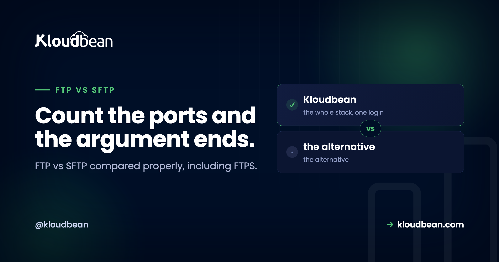

FTP vs SFTP vs FTPS: One Is a Different Protocol, Not a Safer FTP

Most FTP versus SFTP comparisons tell you SFTP is the secure one and stop there, which is true and misses the part that actually matters. SFTP is not FTP with encryption added. It shares no protocol, no ports, and no code with FTP. It is a subsystem of SSH that happens to move files, and it was designed separately by different people for a different purpose. FTPS is the one that genuinely is FTP with TLS bolted on. Once you know which of those two you are looking at, every practical difference, the firewall behaviour, the authentication options, the number of connections, follows from that single fact.
FTP sends credentials and file contents in plaintext over two separate connections. SFTP is a completely different protocol that runs inside a single SSH connection on port 22, encrypting everything and reusing SSH key authentication. FTPS is the third option: real FTP with TLS added, which keeps FTP's two-connection design and the firewall problems that come with it. For almost every situation, use SFTP. Never use plain FTP across the internet.
Three protocols, and two of them get confused constantly
The naming is genuinely awful and it causes real mistakes, so it is worth being blunt about which is which.
| FTP | FTPS | SFTP | |
|---|---|---|---|
| What it is | The original protocol | FTP plus TLS | An SSH subsystem |
| Encrypted | No | Yes | Yes |
| Connections | Two | Two | One |
| Ports | 21 plus data | 21 or 990, plus data range | 22 only |
| Related to FTP | Yes | Yes | Not at all |
| Key authentication | No | No | Yes, SSH keys |
| Firewall friendly | No | No | Yes |
"Secure FTP" is the phrase that does the most damage, because people use it for both FTPS and SFTP, and sometimes for plain FTP inside a VPN. If a client or vendor asks you to support secure FTP, ask which port and whether they mean TLS or SSH. That question saves a day of failed connections.
Plain FTP is not salvageable
FTP dates from the early 1970s, before anyone assumed the network was hostile. Usernames, passwords, and every byte of every file travel in cleartext. Anyone able to observe the traffic reads your credentials directly.
People sometimes argue this is fine on a trusted network. Occasionally that is true, for a device on an isolated segment that speaks nothing else. But on the internet it is indefensible, and the practical argument is simpler than the theoretical one: you gain nothing by using it. SFTP is not harder to set up, not slower in any way you will notice, and available on every managed Linux server. There is no tradeoff to weigh.
FTPS: real FTP with TLS added
FTPS is what people usually mean when they say secure FTP in a procurement document. It is the FTP protocol with a TLS layer, so it encrypts properly and it inherits FTP's architecture entirely.
Two flavours exist, which is another source of failed connections. Implicit FTPS assumes TLS from the first byte, conventionally on port 990. Explicit FTPS connects in the clear on port 21 and then issues AUTH TLS to upgrade. They are not interchangeable, and a client configured for one will simply fail against a server expecting the other.
FTPS is not wrong. It is a legitimate, encrypted protocol, and if a partner system requires it then it is what you use. It just carries a cost that SFTP does not, and that cost is the next section.
The port count is the difference that bites you
This is the part missing from most comparisons, and it is the reason experienced people reach for SFTP without deliberating.
FTP and FTPS use two connections: a control channel for commands and a separate data channel for the actual file bytes. That second connection is negotiated per transfer, and how it gets established is where things break.
That last point deserves emphasis because it is genuinely counterintuitive: adding TLS to FTP makes the firewall problem worse. Network devices used to inspect the plaintext control channel to learn which data port was coming and open it automatically. Encrypt the control channel and that inspection becomes impossible, so the helper stops helping. You end up hand-configuring a passive port range on the server and matching it in the firewall.
So which should you use?
SFTP, unless something external forces your hand. That is not a hedge, it is the answer for the large majority of cases.
- Uploading to your own server. SFTP. You already have SSH, so there is nothing extra to install, expose, or patch.
- A partner or bank explicitly requires FTPS. Use FTPS, and get in writing whether they mean implicit on 990 or explicit on 21.
- A legacy device that only speaks plain FTP. Keep it off the internet entirely. Restrict it to a private network or reach it through a VPN.
- Automated transfers between systems you control. SFTP with key authentication and no password at all.
- Syncing a directory repeatedly. Neither, mostly. See the section below.
The opinion I will defend: running an FTP or FTPS service at all is usually a decision to maintain something you did not need. SFTP arrives with the SSH server you are already running and already patching. Adding a second service, with its own configuration, its own port range, and its own vulnerability history, in order to do a job the first one already does, is work you volunteered for.
Keys beat passwords, and SFTP gets them for nothing
Because SFTP is SSH, it inherits SSH authentication, which means public key authentication with no protocol extension required. FTP and FTPS have no equivalent, and this is a bigger deal than the encryption difference.
A password can be guessed, reused across services, phished, or typed into the wrong window. A key cannot be brute forced in any practical sense, and it is never transmitted. For automation the difference is stark: a script with a stored password is a credential sitting in a file that grants interactive access, while a key can be restricted to one command or one directory.
# Generate a key for transfers, then install it
ssh-keygen -t ed25519 -C "deploy@example.com"
ssh-copy-id -i ~/.ssh/id_ed25519.pub user@server
# Connect, no password involved
sftp user@server
# Or move a single file without an interactive session
scp ./build.tar.gz user@server:/var/www/releases/Once keys work, turn password authentication off for that account. Leaving it enabled means your key is a convenience while the password remains the actual attack surface, and automated password guessing against port 22 is constant background noise on any public server.
Locking down a transfer-only account
One legitimate objection to SFTP: SSH access normally means shell access, and you may want a user who can move files and nothing else. That is a solved problem, and worth doing properly rather than reaching back for FTP.
OpenSSH can confine a user to SFTP alone and to a single directory, using its internal SFTP implementation and a chroot.
# /etc/ssh/sshd_config
Match Group sftponly
ChrootDirectory /srv/sftp/%u
ForceCommand internal-sftp
AllowTcpForwarding no
X11Forwarding no
PermitTunnel noForceCommand internal-sftp means the account cannot get a shell even if it tries. ChrootDirectory confines it to its own tree. Turning off forwarding matters more than people expect, because without it an otherwise restricted account can still use the connection to reach other machines on your network.
One requirement catches everyone: the chroot directory must be owned by root and must not be writable by the user. So the user's writable folder has to be a subdirectory inside it. Get that wrong and the connection closes immediately with a message that does not explain why.
Anything that touches who can reach your server belongs alongside the rest of your access controls, which is what our server hardening checklist and Fail2ban and Shorewall guide cover.
When SFTP is the wrong tool anyway
Worth saying plainly, because a lot of file-transfer questions are really deployment questions wearing a disguise.
If you are dragging files onto a production server to deploy your application, the protocol is not your problem. Manual uploads have no record of what changed, no way to roll back, and a habit of leaving one stale file behind that takes an afternoon to find. Deploy from version control instead, which is what auto-deploy from Git and zero downtime deployments are about.
If you are synchronising a directory repeatedly, rsync over SSH is the better tool. It transfers only what changed, preserves permissions and timestamps, and can verify as it goes.
# Same encryption, far less data on repeat runs
rsync -avz --delete ./public/ user@server:/var/www/site/public/And if you are moving user uploads around by hand because the server keeps filling up, the answer is object storage rather than a better transfer protocol. Our guide to storing user uploads in object storage covers why that is the structural fix.
Where the server matters for FTP vs SFTP vs FTPS
On a managed Linux server, SFTP is simply there, because it comes with the SSH server rather than being a separate product. That is the honest framing: it is not a feature anyone should be selling you, it is a property of the platform being a real server.
What does matter from a host is the surrounding work. Kloudbean servers ship with a Shorewall firewall and Fail2ban configured by default, which is directly relevant here, since port 22 attracts continuous automated password guessing and Fail2ban is what stops that being interesting. Free SSL is issued and renewed for your sites, servers run across seven clouds with your choice of region, and backups are automatic, so a bad upload is recoverable rather than final.
For teams, subusers with granular per-resource and per-action permissions mean people get access to the servers and applications they need rather than to everything, and IP access control lets you restrict who can reach what by address or CIDR range. On enterprise engagements the pattern tightens further: remote access through VPN with direct SSH from the internet blocked, and a dedicated bastion for privileged administration.

If FTP vs SFTP vs FTPS keeps coming back
On securing the server around this, the server hardening checklist and Fail2ban and Shorewall. On replacing manual uploads, auto-deploy from GitHub and zero downtime deployments. On files that should not live on your server at all, object storage for user uploads and S3 compatible object storage. On the transport layer generally, SSL and TLS explained. And for recovering from a mistake, server backups.
Stop uploading. Start deploying.
Managed servers across seven clouds with a firewall and intrusion prevention configured by default, free SSL, automatic backups, and Git deploys that replace manual file transfer entirely. From $8/mo, with free migration assistance. Start at kloudbean.com.
7 clouds · Firewall and Fail2ban by default · Free SSL · Automatic backups · Flat from $8/mo
FAQ
What is the difference between FTP and SFTP?
FTP transmits credentials and file contents in plaintext across two separate connections. SFTP is an unrelated protocol that runs inside a single encrypted SSH connection on port 22 and supports key authentication. They share a similar name and almost nothing else, which is why SFTP is not simply a safer version of FTP.
Is SFTP the same as secure FTP?
No, and that phrase is the main source of confusion in this area. "Secure FTP" most often means FTPS, which is genuine FTP with TLS added. SFTP is a subsystem of SSH sharing no design with FTP. When someone asks for secure FTP, confirm the port and whether they mean TLS or SSH before configuring anything.
Which is better, SFTP or FTPS?
SFTP for nearly all purposes. It uses one port instead of a control port plus a data range, works through NAT and load balancers without special handling, supports key authentication, and comes with the SSH server you already run. Choose FTPS when an external system specifically requires it, which does happen with banks and older enterprise integrations.
What port does SFTP use?
Port 22, the same as SSH, because SFTP is an SSH subsystem rather than a separate service. FTP uses port 21 for control plus a data connection, and implicit FTPS conventionally uses 990. If you have SSH working, SFTP needs no additional firewall rule.
Why does FTPS keep failing through my firewall?
Because of its second connection. In passive mode the client opens a data connection to a high port, so the server must expose a configured range and the firewall must permit it. Encrypting the control channel makes this worse, since network devices can no longer read the port negotiation to open the right port automatically. SFTP avoids this by having no second channel.
Is plain FTP ever acceptable?
Only on an isolated network with a device that speaks nothing else, and even then it is a constraint rather than a choice. Across the internet it is indefensible, because credentials and file contents are readable by anyone on the path. There is also no upside to weigh, since SFTP is no harder and no slower in practice.
Can I give someone SFTP access without shell access?
Yes. In sshd_config, use ForceCommand internal-sftp with ChrootDirectory for that user or group, and disable TCP forwarding so the account cannot use its connection to reach other machines. Note that the chroot directory must be owned by root and not writable by the user, so their writable folder has to sit inside it.
Should I use SFTP to deploy my application?
Better not to. Manual uploads leave no record of what changed, no way to roll back, and frequently a stale file that causes a confusing bug later. Deploy from version control so each release is identified and reversible. If you are syncing a directory rather than deploying, rsync over SSH transfers only what changed and is the right tool.
Is SFTP slower than FTP?
Encryption adds work, and on modern hardware it is not something you will notice for typical transfers. Where FTP can appear faster is with very many tiny files, since SFTP acknowledges operations within its single channel. If throughput genuinely matters, rsync over SSH usually beats both by transferring only differences, and archiving many small files before sending helps more than changing protocol.